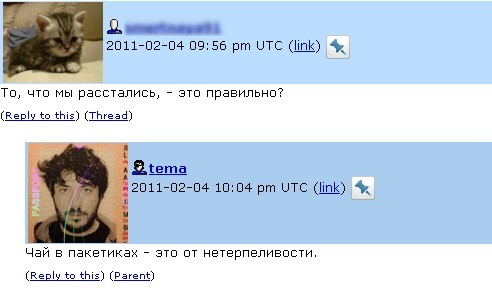

У жж-юзера tema есть такой пост, в которо автор выступает в роли Оракула. Пост мне запомнился одним прорицанием, которое я в то время заскриншотила.
Но их (прорицаниев) там еще много, и почти все теперь собраны здесь. В общем, have fun!
P.S. Я не могла не добавить цитату «Иди спать, Лиз» из книги Элизабет Гилберт «Есть, молиться, любить», так как считаю ее основой основ для ответов на все терзающие душу вопросы.